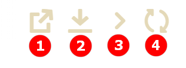

ECOS Приложения
Определения
Артефакт - единица расширения системы. Примеры артефактов: Тип, Форма, Журнал.
Приложение ECOS (ECOS App) - приложение, которое содержит в себе артефакты.
Основная задача Приложений ECOS - переносимость артефактов между стендами и возможность версионирования.
ECOS Application является артефактом, но его нельзя включить в другие приложения т.к. это системный тип.
Работа с приложениями
Работа с приложениями осуществляется на странице администратора системы.
http://host/v2/bpmn-designer?journalId=ecos-apps
{kind=link}
На этой странице можно:
Cоздавать и редактировать приложения.
Скачивать приложения.
Перенос данных с одного стенда на другой
Перенос данных со стенда на стенд осуществляется через Приложения ECOS. Для этого необходимо:
Создать приложение по кнопке +.
{kind=link}
Ввести наименование, выбрать тип данных и автоматически иди вручную добавить соответствующие артефакты.
Скачать приложение.
{kind=link}
Загрузить приложение на необходимом стенде.
{kind=link}
Структура архива приложения
meta.json // метаданные приложения
artifacts: // папка с артефактами приложения
type0:
subType0:
artifact0.json
artifact1.json
...
subType1:
artifact0.json
artifact1.json
...
typ1:
subType0:
artifact0.json
...
subType1:
artifact0.json
...
...
Артефакты
Для управления артефактами предусмотрен журнал Артефакты ECOS. В данный журнал попадают все артефакты, которые достигли микросервиса ecos-apps.
{kind=link}
В данном журнале есть возможность выполнить следующие действия:
{kind=link}
1. Скачать историю артефакта
При нажатии на действие можно выбрать дату, с которой необходимо выгрузить историю артефакта.
При сабмите формы скачивается zip архив со всеми версиями артефакта с указанной даты.
Если последний артефакт был загружен ранее чем выбраная дата, то будет выгружен только он (т.е. всегда будет как минимум 1 артефакт).
Формат имени папки с версией артефакта: дата_созданияTвремя_созданияZ-[USER | APPLICATION | ECOS_APP]. Дата создания указывается в часовом поясе UTC.

2. Скачать артефакт
Всегда скачивается zip архив с выбранным артефактом.
3. Передеплоить артефакт вручную
Отправить артефакт из ecos-apps в микросервис. Может быть полезно при разработке или после сбоя в базе целевого микросервиса т.е. ecos-apps не пропускает артефакт если он ранее был успешно задеплоен.
4. Сбросить пользовательскую версию артефакта
Сброс происходит до той версии, которая была установлена из приложения (APPLICATION или ECOS_APP). Сбрасывать можно только артефакты, которые в колонке Тип источника имеют USER.
Источники артефактов
Есть 3 возможных источника артефактов:
USER - артефакт добавляет или модифицирует пользователь;
APPLICATION - артефакт загружается из приложений, которые подключены к интерфейсу команд;
ECOS_APP - артефакт загружается из приложения ECOS;
Обновление артефактов
Все 3 источника имеют свою политику по обновлению артефактов:
USER - Артефакт обновляется безусловно. Любое изменение артефакта приводит к его изменению в базе микросервиса ecos-apps.
APPLICATION - Артефакт обновляется если он не принадлежит никакому приложению ECOS и была загружена версия артефакта, которая отличается от предыдущей загруженной из APPLICATION. Пример: Если у нас есть следующие ревизии артефакта:
rev2 USER
rev1 USER
rev0 APPLICATION
То rev0 - самая первая версия артефакта, а rec2 - самая последняя версия артефакта. Мы видим, что первая версия артефакта поступила из приложения, а другие две от пользователя.
Если в такой ситуации в микросервис приходит версия rev0 от APPLICATION, то ничего не поменяется не смотря на то что rev2 != rev0.
Если из приложения придет rev3, то новая ревизия загрузится и станет актуальной:
rev3 APPLICATION
rev2 USER
rev1 USER
rev0 APPLICATION
ECOS_APP - обновляется аналогично APPLICATION, но при загрузке артефакту проставляется признак принадлежности приложению. Если артефакт принадлежит приложению, то он не обновляется из APPLICATION.
Создание ECOS Apps проекта
Для создания ECOS Apps проекта нужно создать новый maven проект и настроить главный pom файл следующим образом:
<?xml version="1.0" encoding="UTF-8"?>
<project xmlns="http://maven.apache.org/POM/4.0.0"
xmlns:xsi="http://www.w3.org/2001/XMLSchema-instance"
xsi:schemaLocation="http://maven.apache.org/POM/4.0.0 http://maven.apache.org/xsd/maven-4.0.0.xsd">
<modelVersion>4.0.0</modelVersion>
<groupId>ru.citeck.ecos.eapps.meetings</groupId>
<artifactId>ecos-meetings</artifactId>
<version>1.0.0-SNAPSHOT</version>
<parent>
<groupId>ru.citeck.ecos.eapps.project</groupId>
<artifactId>ecos-apps-simple-parent</artifactId>
<version>1.0.2</version>
</parent>
<repositories>
<repository>
<id>citeck-public</id>
<url>https://nexus.citeck.ru/repository/maven-public</url>
</repository>
</repositories>
</project>
Приложения можно расположить двумя способами:
src/main/resources/app - для варианта когда приложение у нас одно
src/main/resources/apps/[app0,app1,…] - для варианта когда приложений несколько
В корне приложения нужно разместить файл meta.yml, в котором можно указать:
id: String - идентификатор приложения. По умолчанию равен artifactId проекта
name: MLText - имя приложения
Если файл meta.yml отсутствует, то он будет сгенерирован автоматически.
При сборке приложений получается набор zip-архивов, каждый из которых представляет из себя отдельное приложение.
Деплой
Есть два основных способа деплоя - ручной и автоматический.
Ручной деплой
При ручном деплое мы можем собрать приложения командой mvn clean package и загрузить нужный архив из папки target/classes/app``s через журнал приложений, который доступен по ссылке ``/v2/admin?journalId=ecos-apps&type=JOURNAL
Автоматический деплой
Автоматический деплой осуществляется через механизм загрузки артефактов в микросервисе ecos-apps. Артефакты доставляются в виде docker образа.
Команда для сборки docker образа:
mvn clean package jib:dockerBuild -Djib.docker.image.tag=1.0.0-snapshot
где 1.0.0-snapshot - это тэг для итогового образа.
После сборки образа мы подключаем его там, где развернут микросервис ecos-apps:
ecos-meetings-ecos-apps:
container_name: ecos-meetings-ecos-apps
image: nexus.citeck.ru/ecos-meetings:1.0.0-snapshot
environment:
- ECOS_APPS_TARGET_DIR=/run/ecos-apps
volumes:
- ./volumes/ecos-apps:/run/ecos-apps
Параметр ECOS_APPS_TARGET_DIR - это папка, в которую будут скопированы все приложения, которые лежат внутри образа. Копирование происходит с помощью shell скрипта. По завершении копирования приложений ECOS образ сразу же останавливается т.к. на этом его работа заканчивается.
Далее нам нужно подключить папку с артефактами (./volumes/ecos-apps) как volume в микросервис ecos-apps:
eapps-app-dev:
container_name: eapps-app-dev
image: nexus.citeck.ru/ecos-apps:2.6.0-snapshot
ports:
- 8089:8089
environment:
...остальные_env_переменные...
- ECOS_WEBAPP_EAPPS_ADDITIONAL_ARTIFACTS_LOCATIONS=/run/ecos-artifacts
volumes:
- ./volumes/ecos-apps:/run/ecos-artifacts/app/ecosapp
В env переменной мы передаем конфигурацию ECOS_WEBAPP_EAPPS_ADDITIONAL_ARTIFACTS_LOCATIONS, которая указывает на дополнительные папки, из которых нужно загрузить артефакты (приложение ECOS тоже является артефактами с типом app/ecosapp).
Нашу папку с архивами мы должны подключить как volume в директорию $ECOS_WEBAPP_EAPPS_ADDITIONAL_ARTIFACTS_LOCATIONS/app/ecosapp
При запуске микросервиса ecos-apps он начинает следить за директориями, которые указаны в ECOS_WEBAPP_EAPPS_ADDITIONAL_ARTIFACTS_LOCATIONS, и если приложения, которые там находятся изменяются, то микросервис автоматически их загружает к себе в БД и деплоит оттуда артефакты.